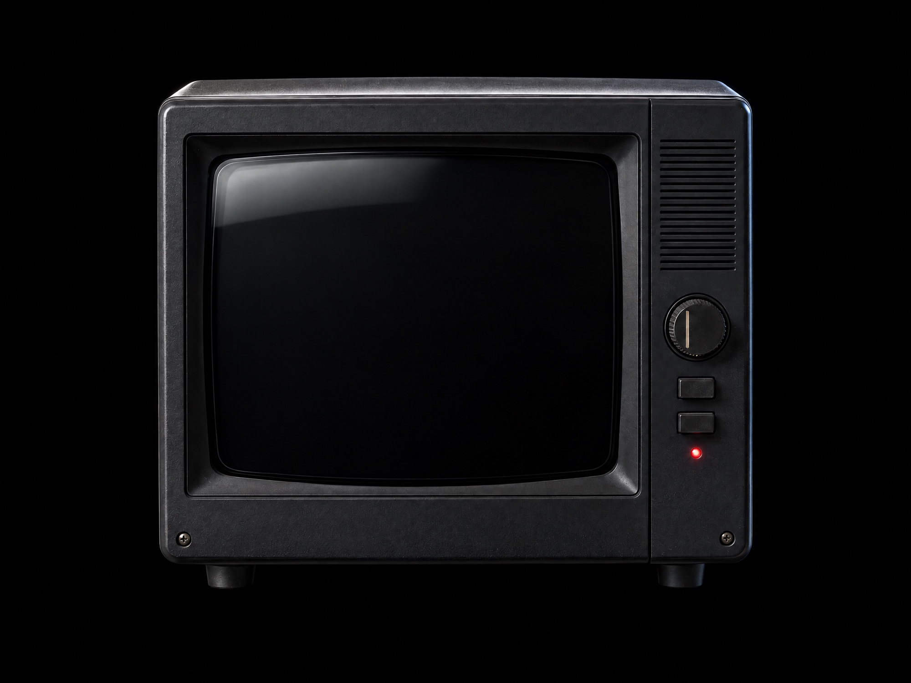
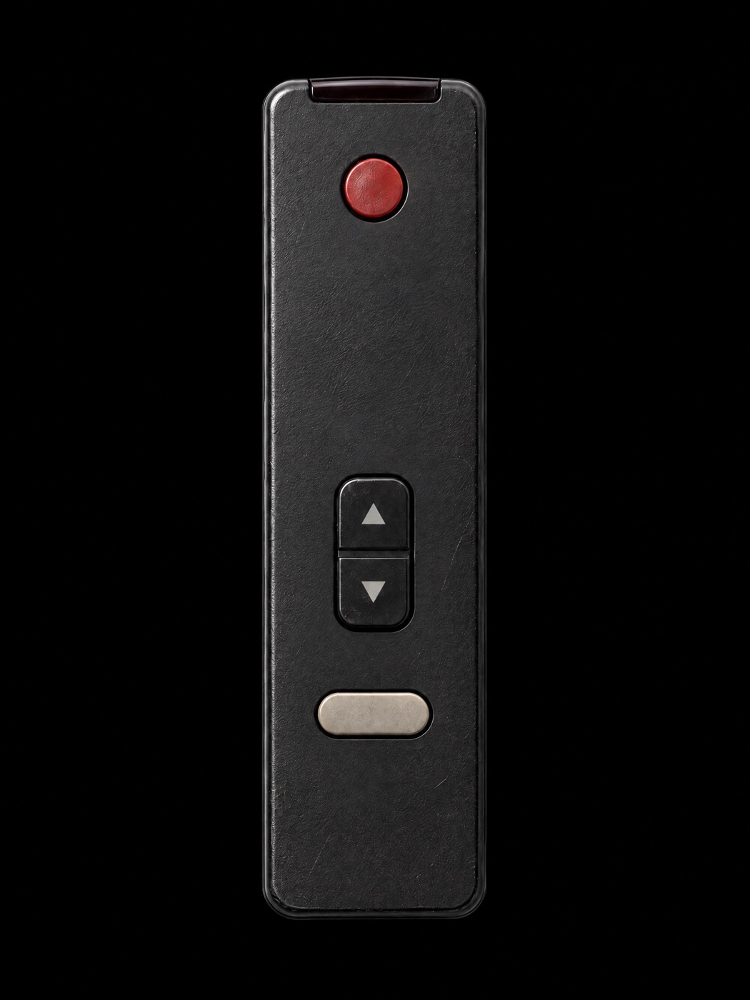

HARRY WU
WORK
FILM
EXPERIMENTS
Channel
01 / 03
Title
Specimen
Year
2026
Runtime
00:25 · AI film

CH 02 · FITCHECK · IN EDIT
FOLLOW THE CHANNEL
INSTAGRAM ↗
VIMEO ↗
EMAIL ↗
CH 01
SPECIMEN · 2026
TUNE
POWER
WATCH

POWER
TUNE
WATCH
FULL FILM
Turn the knob or use the remote ·
←
→
tune ·
Enter
watch
Instagram ↗
Vimeo ↗
Email ↗
← Back to the set
CH 01
Specimen
Sound on
Specimen
2026
AI film · 00:25
Esc to return